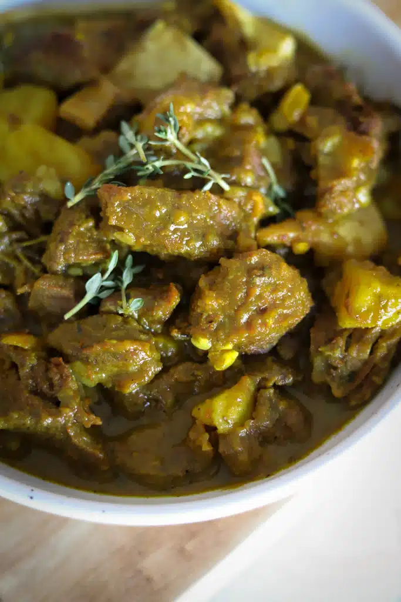

Curry Goat

Chunky pieces of goat are slowly simmered in aromatic blend garlic, ginger, thyme, onions, and hot pepper and with curry taking center stage
Ingridents
- 3- 3 1/2 pounds goat meat
- ¼- ½ cup cooking oil
- 2 teaspoons minced garlic
- 1 medium onion sliced
- 4-5 Tablespoons Curry powder
- Season goat with, salt and pepper. Set aside
- In a large pot, heat oil over medium heat, until hot, and then add the goat meat sauté stirring, frequently, any browned bits off the bottom of the pot, until goat is brown.
- Then add curry, stir for about 1-2 minutes.
- Add the garlic,ginger, white pepper, onions,thyme, tomato paste, scallions (green onions) and scotch bonnet pepper stir for about a minute.
- Then pour in just enough water to cover the goat and bring to a boil and let it simmer until tender (depending on the goat size and preference) about 2 hours or more, stirring the saucepan occasionally and adding more water as needed.